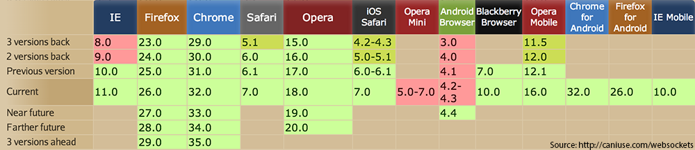

The Real-time Web:
WebSockets, PHP, and Ratchet
Making PHP do what it's not best at
Created by David Jonas / @splitretina
What are WebSockets?
“The intent of WebSockets is to provide a relatively simple protocol that can coexist with HTTP and deployed HTTP infrastructure”
Like TCP but designed to compliment HTTP
Standardizes the hacks that have been layered on HTTP
(like Comet)
Created for low-latency communication
It's not going to replace AJAX
Full Duplex
Message-based
Extensible
Use Cases
- Multiplayer Games
- Coordinated Interactive experiments
- Chat / Presence
- Realtime Data Tickers and Charts
- Data interactions, such as distributed resource locking
- Nearly anything that would normally be done over TCP (besides streams)
Browser Support
It is well supported What does it look like?
But you don't need to know that to use it
Enter Ratchet and Javascript
SockJS, Socket.IO or plain WebSocket, we're talking about PHP hereWhat is Ratchet?

Ratchet is a WebSocket server built on ReactPHP
But what is ReactPHP?
“Event-driven, non-blocking I/O with PHP.”
Like EventMachine (Ruby), Twisted (Python) and Node.js (V8)
But wait!
Node.js and friends are daemons.
PHP doesn't do that!
ReactPHP and Ratchet makes it happen.
<?php
use Ratchet\MessageComponentInterface;
use Ratchet\ConnectionInterface;
class Chat implements MessageComponentInterface {
public function onOpen(ConnectionInterface $conn) {
}
public function onMessage(ConnectionInterface $from, $msg) {
}
public function onClose(ConnectionInterface $conn) {
}
public function onError(ConnectionInterface $conn, \Exception $e) {
}
}
Best Practices
PHP Environment: libevent, ulimit, no xdebug
Use port 80, 443 for best compatibility
Run on subdomain: ws.example.com
Okay, so show me how to do something.
composer require cboden/Ratchet:dev-master
demo time.
Clients
Reconnecting WebSocket
SockJS
Socket.IO
Security
Suseptible to XSS but does use CORS
Validate client input as normal (untrusted)
Validate server responses as if dangerous: Send data not code and JSON.parse()
Connections can easily be initiated non-browsers
Problems
Workflow
Red, Restart, Refactor
Deployment
Long running; not stateless like traditional php
When code changes server needs be restarted
We are not sysadmins
Use a daemon manager and automate restarting
Rocketeer or Capistrano will be your friend
Advanced Topics
WAMP
“WAMP is an open WebSocket subprotocol that provides two asynchronous messaging patterns: RPC and PubSub”
Ratchet Component
public function onCall(ConnectionInterface $conn, string $id, Topic $topic, array $params)
public function onSubscribe(ConnectionInterface $conn, Topic $topic)
public function onUnsubscribe(ConnectionInterface $conn, Topic $topic)
public function onPublish(ConnectionInterface $conn, Topic $topic, string $event)
Ratchet Connection
public function event (string $topic, string $msg) - Publish/Send data to a client that has subscribed to a topic
public function callResult (string $id, array $data) - A response to a client Call. Make sure to pass the corresponding $id from the onCall event
public function callError (string $id, string $topic, string $desc = '', string $details = null)
Client: Autobahnjs
Servers and Load Balancing
Reverse proxy (HAProxy or Varnish)
nginx > 1.3.13: http://nginx.org/en/docs/http/websocket.html
Apache 2.4 mod_proxy_wstunnel: http://httpd.apache.org/docs/2.4/mod/mod_proxy_wstunnel.html
Recap
WebSockets are for low-latency communication
Full duplex and Extensible
Well supported in modern browsers
Different workflow than traditional PHP
Thanks!
Contact me any time
David Jonas
david.jonas@gmail.com
http://github.com/davidrjonas
@splitretina